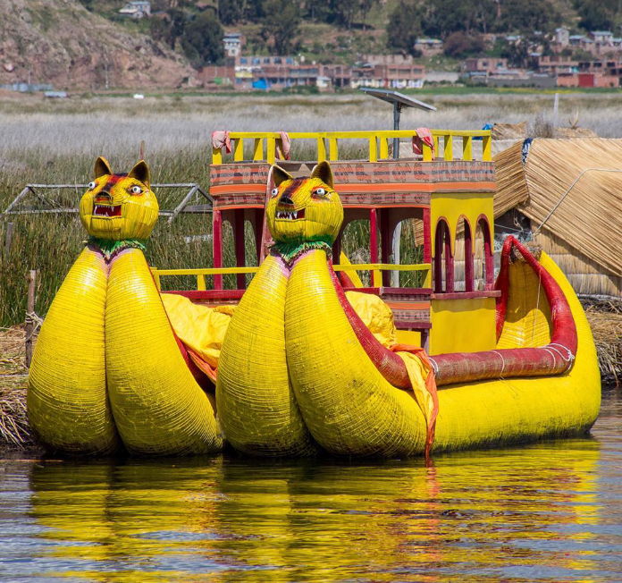
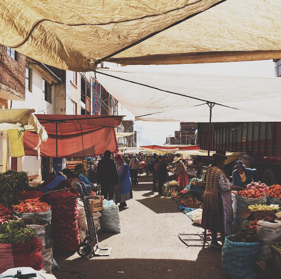
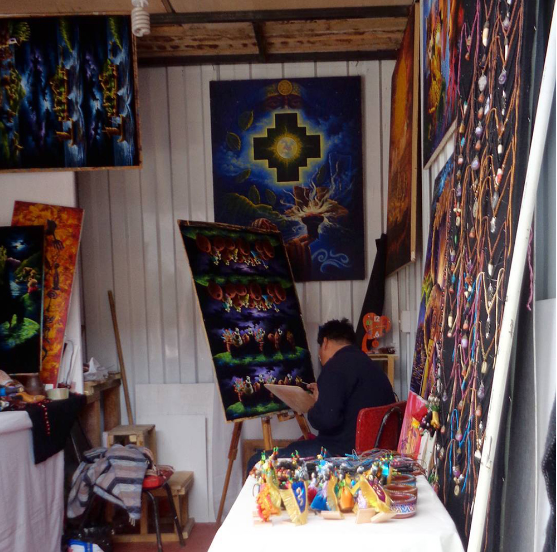
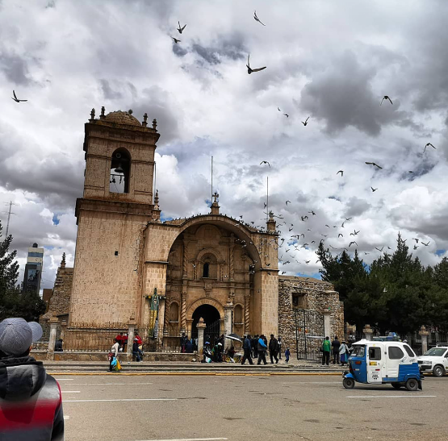
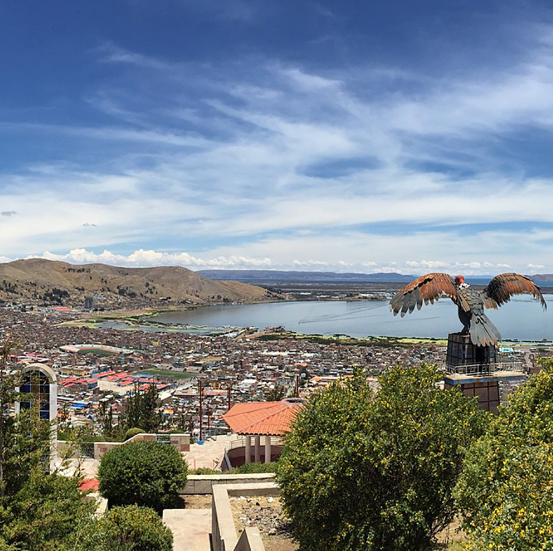

5 imperdibles lugares turísticos de Puno y el Titicaca
Muchas personas pasan por alto que Perú es mucho más que Cusco y Machu Picchu. La realidad es que tiene para todos los gustos, y la presencia del lago Titicaca no pasa desapercibida, especialmente para los habitantes de Puno. Si visitas la increíble ciudad, estos son los 10 lugares turísticos de Puno y el Titicaca que debes disfrutar sí o sí.
1. Islas flotantes de los Uros

La cultura de los uros es única y fascinante. Su vida y tradiciones están tan vinculadas en el Titicaca, que incluso viven sobre las aguas del lago en islas flotantes. Las ingeniosas «Islas de Uros» están compuestas por totora, un junco con una flotabilidad destacable que les permite albergar familias enteras en su superficie.
En el lago hay aproximadamente 100 islas flotantes, y la movilización se realiza en balsas también a base de totora. Sus habitantes son hospitalarios y se dedican al turismo, y puedes obtener una estampa en tu pasaporte en una de las islas más grandes.
En el lago hay aproximadamente 100 islas flotantes, y la movilización se realiza en balsas también a base de totora. Sus habitantes son hospitalarios y se dedican al turismo, y puedes obtener una estampa en tu pasaporte en una de las islas más grandes.
2. Islas de Amantaní y Taquile

No creas que las islas flotantes son las únicas interesantes del Titicaca, pues también te encontrarás con Amantaní y Taquile, las más importantes cerca de Puno. En Taquile puedes subir 560 peldaños para llegar al pueblo, donde obtendrás vistas únicas del lago.
Amantaní es una buena opción para almorzar durante tu día, pues toda la comida del lugar es cosechada en la misma isla, lo que le otorga un valor especial. De la misma forma, es lo ideal disfrutar de una trucha, pues es uno de los alimentos más importantes del Titicaca.
En ambas islas puedes pasar la noche para obtener una experiencia más auténtica, pero ten en consideración que si no vas con tour, la movilización puede tornarse algo compleja.
3. Feria artesanal del puerto de Puno

En el puerto de Puno se encuentra una de las ferias artesanales de mayor popularidad en la zona. Este es uno de los lugares turísticos de Puno clave si te gustan las manualidades y prendas elaboradas en lana.
Es bastante normal que, al existir tantos puestos, haya una competencia por los clientes, volviendo los precios más asequibles para los turistas que deseen algún recuerdo o regalo. Es un buen lugar para disfrutar de artesanías y pintura, aunque también tiene lugares para almorzar, por lo que puedes dedicarle un buen par de horas con toda calma.
4. Juliaca e Isla Tikonata

En Puno es buena idea movilizarse con taxis, y puedes tomar uno hasta la ciudad de Juliaca. La localidad es bastante importante, porque cuenta con el aeropuerto de la provincia.
Aquí puedes visitar la Iglesia Matriz de Santa Catalina, que comenzó su construcción en 1649 y tardó 125 años para ser terminada. Su campanario es característico de la ciudad. También puedes conocer la isla Tikonata, que ofrece un turismo más místico en el que se puede vivir como los locales, similar a las islas de Amantaní y Taquile.
5. Mirador de Kuntur Wasi y Puma Uta

¿Quieres tener una idea de cómo se ve Puno desde las alturas? Entonces es un buen plan conocer los miradores de Kuntur Wasi y Puma Uta, ambos imperdibles lugares turísticos de Puno. Kuntur Wasi tiene en su cima un cóndor, el patrono vigilante de la ciudad. Desde aquí te puedes sentir como uno de ellos en vuelo, y obtener increíbles vistas de Puno y el Titicaca.
Puma Uta tiene una idea similar, pero esta vez con una escultura gigante de un puma (y otros animales) en un mirador ideal para divertirse y admirar la magia de estas tierras. Además, un poco de actividad física nunca viene mal.